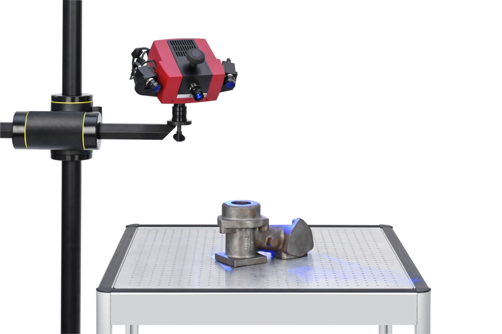

非接觸式量測技術，也就是我們俗稱的3D掃描，透過光學鏡頭，配合雷射或不同光源投射的變化取得物件的反射加以分析成為數位資訊。.
以工業級3D掃描儀ATOS為例，該設備的原理採用結構光掃描儀（Structured light scanner）是通過光源將具備特殊結構的光線投射至物件表面，經過電腦計算取得數位資訊，應用領域廣，例如：汽車製造、精密儀器、科技產品、航空器 材、能源設備、藝術文物等。
Fugit libero in magnam aspernatur repellendus, unde! Quos cupiditate quas blanditiis fugit atque cum, ipsam. Quas est placeat laboriosam rem.
Id voluptates autem a accusamus repellendus quia magnam labore ad voluptate incidunt possimus in fugiat excepturi quas enim error, ex.